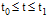
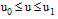
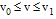

| |
Introduction and Summary |
| Chapters | Implementing an FG System >>> |
This document provides a complete guide to enable the user to implement in-house curves and surfaces for modeling with within Parasolid. Parasolid terms such externally defined geometry as Foreign Geometry (FG) or simply foreign. The contents of the chapters and appendices are as follows:
The appendices are as follows:
|
Note: You are advised to consult with Parasolid Support before you use Foreign Geometry as there may be a better solution for your modelling needs. |
Parasolid terms externally defined curves and surfaces as Foreign Geometry (FG) or foreign. FG functionality allows Parasolid to access user defined surfaces and curves via the FG module interface. Consequently, the users are able to use in-house surfaces and curves for Parasolid modeling alongside the standard Parasolid curves and surface types.
FG objects (i.e. curves and surfaces) are identified by a key. In addition, the user is able to provide numerical data (reals and integers) when an FG object is initialized, enabling a single evaluator to define a family of geometries. Parasolid requires that the foreign curve or surface is defined parametrically and is able to supply (via the FG module interface) position and derivatives at specific parameter values.
Specifically, a curve evaluator must be parametrised over a finite interval  and be able to supply position, first and second derivatives over this interval.
A surface evaluator must be parametrised over a finite region  and  and must be able to supply position, first and all second derivatives over this region.
Both curves and surfaces are subject to geometric restrictions as detailed in Appendix A.
The user must write their own FG module, based upon the supplied example and on the details given in Chapter 2. This module is where requests from Parasolid for details of externally evaluated curves and surfaces are resolved. Once this module has been linked into Parasolid the user may model with their own in-house curves and surfaces using the standard Parasolid interface functions.
There are six functions exported by the FG module. The user must provide definitions for each of these functions, and use PK_SESSION_register_frustrum to register them with Parasolid, along with the standard frustrum functions. Parasolid obtains all details of externally evaluated geometry via calls to these functions. The functions are:
The creation functions, FGCRCU and FGCRSU receive a key (character string) identifying the evaluator function along with numerical data required for evaluator initialization. In addition a block of space, fg_data, is supplied, in which sufficient details for future identification of the evaluator are stored. These received arguments are passed directly through to the FG module by the functions, PK_FCURVE_create and PK_FSURF_create. The functions FGCRCU and FGCRSU may be called as a result of the user creating new foreign curves or surfaces using the functions PK_FCURVE_create and PK_FSURF_create, or indirectly to re-initialize any foreign geometry present on an archived part that is loaded into Parasolid using PK_PART_receive.
The parameter properties functions, FGPRCU, FGPRSU are called once the evaluator has been successfully initialized as above. They are passed the fg_data block along with the numerical data PK_FCURVE_create, PK_FSURF_create and supply the parameter range of the evaluator concerned. A simple status return from the parameter properties functions ensures Parasolid uses default parameter ranges of the unit interval (for curves) or unit square (for surfaces).
The evaluation functions, FGEVCU, FGEVSU are called by Parasolid to request position and derivatives of Foreign Geometry objects. These functions are passed the fg_data block to identify the evaluator function along with the further numerical data supplied through the interface by PK_FCURVE_create, PK_FSURF_create. They are also passed details of the specific position and derivatives required and an array in which these evaluations are to be placed.
The FG module must be linked into Parasolid to allow the user access to their curves and surfaces defined therein. The details of how to do this are machine specific but the principle is straightforward.
Command scripts are provided with the Parasolid release enabling the user to link the supplied example FG module together with Parasolid to form a customized version of KID.
Once the FG module has been successfully implemented and connected in to Parasolid, the user is able to proceed with solid modeling using FG curves and surfaces. Modeling requests are submitted, as usual, via the interface. The user sees Foreign Geometry objects alongside the standard Parasolid geometry types, and is able to use the same modeling commands upon them.
There are in addition, four functions specific to FG. These are:
The exact specification of these functions is given in the PK Interface Programming Reference Manual and full details of their use is given in Chapter 3 of this document.
The creation functions, PK_FCURVE_create and PK_FSURF_create, are called when an evaluator is to be initialized for modeling with. Supplied arguments are the evaluator key and the length of this key, together with extra numerical data required by the evaluator, and the length of the fg_data block which is used to store information to identify the evaluator in future. These arguments are passed on to the FG module in calls to FGCRCU, FGCRSU (see previous section, “FG module functions”).
The FG output functions, PK_FCURVE_ask, PK_FSURF_create receive the curve, surface respectively and an array into which the returned key string is written. Details of the curve, surface are returned: i.e. the key, key length, lists of numerical data used to initialize the curve/surface, along with the curve/surface sense and any transformation applied.
| Chapters | Implementing an FG System >>> |